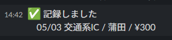
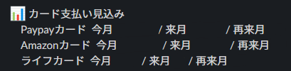
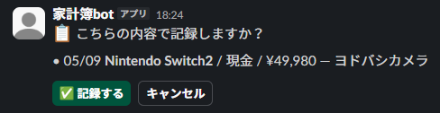
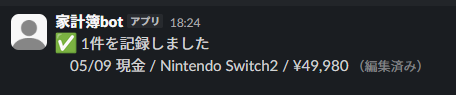
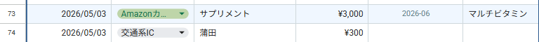
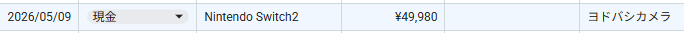
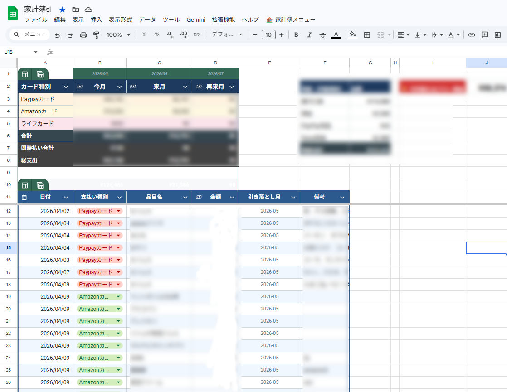
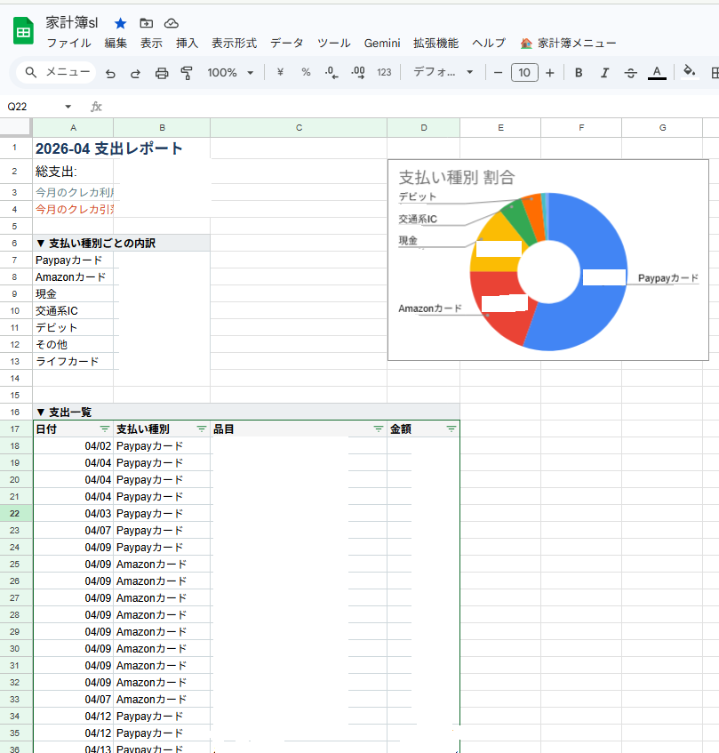

個人用 / Private repository
Slack家計簿
Slackのコマンドから支出と収入を入力し、Googleスプレッドシートへ自動で反映する個人用家計簿です。
引き落とし月の計算と月次レポートもまとめて処理します。
- 種類
- Slack連携の自動化システム
- 公開状況
- 個人用のため非公開
- 技術
- Google Apps Script / Slack API / Google Sheets / Gemini 2.5 Flash

Slackから開く入力フォーム。
日付、品目、金額、支払い方法を入力します。
画像を選択すると拡大できますSlackでの返答


記録した内容をSlack上ですぐに確認できます。


支払い内容と自動計算した引き落とし月を返します。


/kbではGeminiの解析結果をそのまま書き込まず、内容を確認する段階を挟みます。


複数件の日付、支払い種別、金額をまとめて追記します。
スプレッドシートへの反映と集計


Slackから送信するとログへ即時追記します。




今月の請求額と自由に使える金額を表示します。


支払い方法別グラフと支出一覧を自動生成します。
できること
- 支出を1件記録
/kから日付、品目、金額、支払い方法をフォームで入力します。 - 収入を記録
/kiから給与や副収入を種別と一緒に記録します。 - 自然言語で一括入力
/kbへ文章を渡すと、Geminiが複数の支出を解析して確認画面を作ります。 - 引き落とし月を計算
クレジットカードの締め日に応じて、口座から引き落とされる月を自動で求めます。
- 月次レポート
購入日ベースの支出と請求月ベースの資金繰りを分けて集計します。